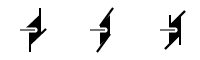

Fourfold Screw Axes (4n)
Return link to the symbol table
The symbols above show fourfold screw axes perpendicular to the
plane of the screen, i.e parallel to Z.
A fourfold screw axis is equivalent to an anticlockwise rotation of 90°
about a line followed by a translation parallel to that line.
The translation is either 1/4, 1/2, or 3/4 of the repeat distance
in the lattice along the axis for four-one, four-two, and
four-three screw axes, respectively.
A four-one screw axis with
a fourfold rotation about the c-axis, i.e. about
the line 0,0,z, followed by a translation of 1/4 c
along it, will have
the corresponding symmetry operator -y,x,1/4+z.
Note that four-one and four-three are equivalent
except for handedness (right- and left-handed, respectively),
in contrast to the four-two axis which has no handedness.
These axes have the written symbols "41",
"42", and
"43", respectively.

In space group diagrams for cubic symmetry, fourfold screw axes
are shown along both X and Y directions as well as along the Z direction
when present.
A fractional value next to the symbol indicates the height
of the axis of rotation above the XY plane.
© Copyright 1997-1999.
Birkbeck College, University of London.